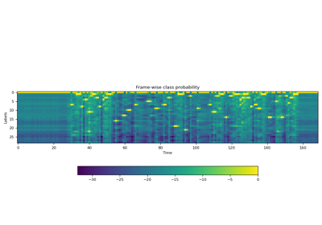
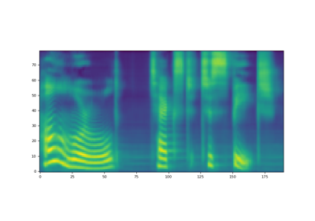

torchaudio.pipelines¶
The pipelines subpackage contains API to access the models with pretrained weights, and information/helper functions associated the pretrained weights.
RNN-T Streaming/Non-Streaming ASR¶
RNNTBundle¶
-
class
torchaudio.pipelines.RNNTBundle[source]¶ Dataclass that bundles components for performing automatic speech recognition (ASR, speech-to-text) inference with an RNN-T model.
More specifically, the class provides methods that produce the featurization pipeline, decoder wrapping the specified RNN-T model, and output token post-processor that together constitute a complete end-to-end ASR inference pipeline that produces a text sequence given a raw waveform.
It can support non-streaming (full-context) inference as well as streaming inference.
Users should not directly instantiate objects of this class; rather, users should use the instances (representing pre-trained models) that exist within the module, e.g.
EMFORMER_RNNT_BASE_LIBRISPEECH.- Example
>>> import torchaudio >>> from torchaudio.pipelines import EMFORMER_RNNT_BASE_LIBRISPEECH >>> import torch >>> >>> # Non-streaming inference. >>> # Build feature extractor, decoder with RNN-T model, and token processor. >>> feature_extractor = EMFORMER_RNNT_BASE_LIBRISPEECH.get_feature_extractor() 100%|███████████████████████████████| 3.81k/3.81k [00:00<00:00, 4.22MB/s] >>> decoder = EMFORMER_RNNT_BASE_LIBRISPEECH.get_decoder() Downloading: "https://download.pytorch.org/torchaudio/models/emformer_rnnt_base_librispeech.pt" 100%|███████████████████████████████| 293M/293M [00:07<00:00, 42.1MB/s] >>> token_processor = EMFORMER_RNNT_BASE_LIBRISPEECH.get_token_processor() 100%|███████████████████████████████| 295k/295k [00:00<00:00, 25.4MB/s] >>> >>> # Instantiate LibriSpeech dataset; retrieve waveform for first sample. >>> dataset = torchaudio.datasets.LIBRISPEECH("/home/librispeech", url="test-clean") >>> waveform = next(iter(dataset))[0].squeeze() >>> >>> with torch.no_grad(): >>> # Produce mel-scale spectrogram features. >>> features, length = feature_extractor(waveform) >>> >>> # Generate top-10 hypotheses. >>> hypotheses = decoder(features, length, 10) >>> >>> # For top hypothesis, convert predicted tokens to text. >>> text = token_processor(hypotheses[0][0]) >>> print(text) he hoped there would be stew for dinner turnips and carrots and bruised potatoes and fat mutton pieces to [...] >>> >>> >>> # Streaming inference. >>> hop_length = EMFORMER_RNNT_BASE_LIBRISPEECH.hop_length >>> num_samples_segment = EMFORMER_RNNT_BASE_LIBRISPEECH.segment_length * hop_length >>> num_samples_segment_right_context = ( >>> num_samples_segment + EMFORMER_RNNT_BASE_LIBRISPEECH.right_context_length * hop_length >>> ) >>> >>> # Build streaming inference feature extractor. >>> streaming_feature_extractor = EMFORMER_RNNT_BASE_LIBRISPEECH.get_streaming_feature_extractor() >>> >>> # Process same waveform as before, this time sequentially across overlapping segments >>> # to simulate streaming inference. Note the usage of ``streaming_feature_extractor`` and ``decoder.infer``. >>> state, hypothesis = None, None >>> for idx in range(0, len(waveform), num_samples_segment): >>> segment = waveform[idx: idx + num_samples_segment_right_context] >>> segment = torch.nn.functional.pad(segment, (0, num_samples_segment_right_context - len(segment))) >>> with torch.no_grad(): >>> features, length = streaming_feature_extractor(segment) >>> hypotheses, state = decoder.infer(features, length, 10, state=state, hypothesis=hypothesis) >>> hypothesis = hypotheses[0] >>> transcript = token_processor(hypothesis[0]) >>> if transcript: >>> print(transcript, end=" ", flush=True) he hoped there would be stew for dinner turn ips and car rots and bru 'd oes and fat mut ton pieces to [...]
- Tutorials using
RNNTBundle:
-
get_decoder() → torchaudio.models.RNNTBeamSearch[source]¶ Constructs RNN-T decoder.
- Returns
RNNTBeamSearch
-
get_feature_extractor() → RNNTBundle.FeatureExtractor[source]¶ Constructs feature extractor for non-streaming (full-context) ASR.
- Returns
FeatureExtractor
-
get_streaming_feature_extractor() → RNNTBundle.FeatureExtractor[source]¶ Constructs feature extractor for streaming (simultaneous) ASR.
- Returns
FeatureExtractor
-
get_token_processor() → RNNTBundle.TokenProcessor[source]¶ Constructs token processor.
- Returns
TokenProcessor
-
property
hop_length¶ Number of samples between successive frames in input expected by model.
- Type


RNNTBundle - FeatureExtractor¶
-
class
RNNTBundle.FeatureExtractor[source]¶ -
abstract
__call__(input: torch.Tensor) → Tuple[torch.Tensor, torch.Tensor]¶ Generates features and length output from the given input tensor.
- Parameters
input (torch.Tensor) – input tensor.
- Returns
- torch.Tensor:
Features, with shape (length, *).
- torch.Tensor:
Length, with shape (1,).
- Return type
-
abstract
RNNTBundle - TokenProcessor¶
EMFORMER_RNNT_BASE_LIBRISPEECH¶
-
torchaudio.pipelines.EMFORMER_RNNT_BASE_LIBRISPEECH¶ Pre-trained Emformer-RNNT-based ASR pipeline capable of performing both streaming and non-streaming inference.
The underlying model is constructed by
torchaudio.models.emformer_rnnt_base()and utilizes weights trained on LibriSpeech using training scripttrain.pyhere with default arguments.Please refer to
RNNTBundlefor usage instructions.
wav2vec 2.0 / HuBERT - Representation Learning¶
-
class
torchaudio.pipelines.Wav2Vec2Bundle[source]¶ Data class that bundles associated information to use pretrained Wav2Vec2Model.
This class provides interfaces for instantiating the pretrained model along with the information necessary to retrieve pretrained weights and additional data to be used with the model.
Torchaudio library instantiates objects of this class, each of which represents a different pretrained model. Client code should access pretrained models via these instances.
Please see below for the usage and the available values.
- Example - Feature Extraction
>>> import torchaudio >>> >>> bundle = torchaudio.pipelines.HUBERT_BASE >>> >>> # Build the model and load pretrained weight. >>> model = bundle.get_model() Downloading: 100%|███████████████████████████████| 360M/360M [00:06<00:00, 60.6MB/s] >>> >>> # Resample audio to the expected sampling rate >>> waveform = torchaudio.functional.resample(waveform, sample_rate, bundle.sample_rate) >>> >>> # Extract acoustic features >>> features, _ = model.extract_features(waveform)
-
get_model(self, *, dl_kwargs=None) → torchaudio.models.Wav2Vec2Model[source]¶ Construct the model and load the pretrained weight.
The weight file is downloaded from the internet and cached with
torch.hub.load_state_dict_from_url()- Parameters
dl_kwargs (dictionary of keyword arguments) – Passed to
torch.hub.load_state_dict_from_url().
WAV2VEC2_BASE¶
-
torchaudio.pipelines.WAV2VEC2_BASE¶ wav2vec 2.0 model with “Base” configuration.
Pre-trained on 960 hours of unlabeled audio from LibriSpeech dataset [1] (the combination of “train-clean-100”, “train-clean-360”, and “train-other-500”). Not fine-tuned.
Originally published by the authors of wav2vec 2.0 [2] under MIT License and redistributed with the same license. [License, Source]
Please refer to
torchaudio.pipelines.Wav2Vec2Bundle()for the usage.
WAV2VEC2_LARGE¶
-
torchaudio.pipelines.WAV2VEC2_LARGE¶ Build “large” wav2vec2 model.
Pre-trained on 960 hours of unlabeled audio from LibriSpeech dataset [1] (the combination of “train-clean-100”, “train-clean-360”, and “train-other-500”). Not fine-tuned.
Originally published by the authors of wav2vec 2.0 [2] under MIT License and redistributed with the same license. [License, Source]
Please refer to
torchaudio.pipelines.Wav2Vec2Bundle()for the usage.
WAV2VEC2_LARGE_LV60K¶
-
torchaudio.pipelines.WAV2VEC2_LARGE_LV60K¶ Build “large-lv60k” wav2vec2 model.
Pre-trained on 60,000 hours of unlabeled audio from Libri-Light dataset [3]. Not fine-tuned.
Originally published by the authors of wav2vec 2.0 [2] under MIT License and redistributed with the same license. [License, Source]
Please refer to
torchaudio.pipelines.Wav2Vec2Bundle()for the usage.
WAV2VEC2_XLSR53¶
-
torchaudio.pipelines.WAV2VEC2_XLSR53¶ wav2vec 2.0 model with “Base” configuration.
Trained on 56,000 hours of unlabeled audio from multiple datasets ( Multilingual LibriSpeech [4], CommonVoice [5] and BABEL [6]). Not fine-tuned.
Originally published by the authors of Unsupervised Cross-lingual Representation Learning for Speech Recognition [7] under MIT License and redistributed with the same license. [License, Source]
Please refer to
torchaudio.pipelines.Wav2Vec2Bundle()for the usage.
HUBERT_BASE¶
-
torchaudio.pipelines.HUBERT_BASE¶ HuBERT model with “Base” configuration.
Pre-trained on 960 hours of unlabeled audio from LibriSpeech dataset [1] (the combination of “train-clean-100”, “train-clean-360”, and “train-other-500”). Not fine-tuned.
Originally published by the authors of HuBERT [8] under MIT License and redistributed with the same license. [License, Source]
Please refer to
torchaudio.pipelines.Wav2Vec2Bundle()for the usage.
HUBERT_LARGE¶
-
torchaudio.pipelines.HUBERT_LARGE¶ HuBERT model with “Large” configuration.
Pre-trained on 60,000 hours of unlabeled audio from Libri-Light dataset [3]. Not fine-tuned.
Originally published by the authors of HuBERT [8] under MIT License and redistributed with the same license. [License, Source]
Please refer to
torchaudio.pipelines.Wav2Vec2Bundle()for the usage.
HUBERT_XLARGE¶
-
torchaudio.pipelines.HUBERT_XLARGE¶ HuBERT model with “Extra Large” configuration.
Pre-trained on 60,000 hours of unlabeled audio from Libri-Light dataset [3]. Not fine-tuned.
Originally published by the authors of HuBERT [8] under MIT License and redistributed with the same license. [License, Source]
Please refer to
torchaudio.pipelines.Wav2Vec2Bundle()for the usage.
wav2vec 2.0 / HuBERT - Fine-tuned ASR¶
Wav2Vec2ASRBundle¶
-
class
torchaudio.pipelines.Wav2Vec2ASRBundle[source]¶ Data class that bundles associated information to use pretrained Wav2Vec2Model.
This class provides interfaces for instantiating the pretrained model along with the information necessary to retrieve pretrained weights and additional data to be used with the model.
Torchaudio library instantiates objects of this class, each of which represents a different pretrained model. Client code should access pretrained models via these instances.
Please see below for the usage and the available values.
- Example - ASR
>>> import torchaudio >>> >>> bundle = torchaudio.pipelines.HUBERT_ASR_LARGE >>> >>> # Build the model and load pretrained weight. >>> model = bundle.get_model() Downloading: 100%|███████████████████████████████| 1.18G/1.18G [00:17<00:00, 73.8MB/s] >>> >>> # Check the corresponding labels of the output. >>> labels = bundle.get_labels() >>> print(labels) ('-', '|', 'E', 'T', 'A', 'O', 'N', 'I', 'H', 'S', 'R', 'D', 'L', 'U', 'M', 'W', 'C', 'F', 'G', 'Y', 'P', 'B', 'V', 'K', "'", 'X', 'J', 'Q', 'Z') >>> >>> # Resample audio to the expected sampling rate >>> waveform = torchaudio.functional.resample(waveform, sample_rate, bundle.sample_rate) >>> >>> # Infer the label probability distribution >>> emissions, _ = model(waveform) >>> >>> # Pass emission to decoder >>> # `ctc_decode` is for illustration purpose only >>> transcripts = ctc_decode(emissions, labels)
- Tutorials using
Wav2Vec2ASRBundle: - 
Forced Alignment with Wav2Vec2
Forced Alignment with Wav2Vec2
-
get_model(self, *, dl_kwargs=None) → torchaudio.models.Wav2Vec2Model¶ Construct the model and load the pretrained weight.
The weight file is downloaded from the internet and cached with
torch.hub.load_state_dict_from_url()- Parameters
dl_kwargs (dictionary of keyword arguments) – Passed to
torch.hub.load_state_dict_from_url().
-
get_labels(*, blank: str = '-') → Tuple[str][source]¶ The output class labels (only applicable to fine-tuned bundles)
The first is blank token, and it is customizable.
- Parameters
blank (str, optional) – Blank token. (default:
'-')- Returns
For models fine-tuned on ASR, returns the tuple of strings representing the output class labels.
- Return type
Tuple[str]
- Example
>>> import torchaudio >>> torchaudio.models.HUBERT_ASR_LARGE.get_labels() ('-', '|', 'E', 'T', 'A', 'O', 'N', 'I', 'H', 'S', 'R', 'D', 'L', 'U', 'M', 'W', 'C', 'F', 'G', 'Y', 'P', 'B', 'V', 'K', "'", 'X', 'J', 'Q', 'Z')


WAV2VEC2_ASR_BASE_10M¶
-
torchaudio.pipelines.WAV2VEC2_ASR_BASE_10M¶ Build “base” wav2vec2 model with an extra linear module
Pre-trained on 960 hours of unlabeled audio from LibriSpeech dataset [1] (the combination of “train-clean-100”, “train-clean-360”, and “train-other-500”), and fine-tuned for ASR on 10 minutes of transcribed audio from Libri-Light dataset [3] (“train-10min” subset).
Originally published by the authors of wav2vec 2.0 [2] under MIT License and redistributed with the same license. [License, Source]
Please refer to
torchaudio.pipelines.Wav2Vec2ASRBundle()for the usage.
WAV2VEC2_ASR_BASE_100H¶
-
torchaudio.pipelines.WAV2VEC2_ASR_BASE_100H¶ Build “base” wav2vec2 model with an extra linear module
Pre-trained on 960 hours of unlabeled audio from LibriSpeech dataset [1] (the combination of “train-clean-100”, “train-clean-360”, and “train-other-500”), and fine-tuned for ASR on 100 hours of transcribed audio from “train-clean-100” subset.
Originally published by the authors of wav2vec 2.0 [2] under MIT License and redistributed with the same license. [License, Source]
Please refer to
torchaudio.pipelines.Wav2Vec2ASRBundle()for the usage.
WAV2VEC2_ASR_BASE_960H¶
-
torchaudio.pipelines.WAV2VEC2_ASR_BASE_960H¶ Build “base” wav2vec2 model with an extra linear module
Pre-trained on 960 hours of unlabeled audio from LibriSpeech dataset [1] (the combination of “train-clean-100”, “train-clean-360”, and “train-other-500”), and fine-tuned for ASR on the same audio with the corresponding transcripts.
Originally published by the authors of wav2vec 2.0 [2] under MIT License and redistributed with the same license. [License, Source]
Please refer to
torchaudio.pipelines.Wav2Vec2ASRBundle()for the usage.
WAV2VEC2_ASR_LARGE_10M¶
-
torchaudio.pipelines.WAV2VEC2_ASR_LARGE_10M¶ Build “large” wav2vec2 model with an extra linear module
Pre-trained on 960 hours of unlabeled audio from LibriSpeech dataset [1] (the combination of “train-clean-100”, “train-clean-360”, and “train-other-500”), and fine-tuned for ASR on 10 minutes of transcribed audio from Libri-Light dataset [3] (“train-10min” subset).
Originally published by the authors of wav2vec 2.0 [2] under MIT License and redistributed with the same license. [License, Source]
Please refer to
torchaudio.pipelines.Wav2Vec2ASRBundle()for the usage.
WAV2VEC2_ASR_LARGE_100H¶
-
torchaudio.pipelines.WAV2VEC2_ASR_LARGE_100H¶ Build “large” wav2vec2 model with an extra linear module
Pre-trained on 960 hours of unlabeled audio from LibriSpeech dataset [1] (the combination of “train-clean-100”, “train-clean-360”, and “train-other-500”), and fine-tuned for ASR on 100 hours of transcribed audio from the same dataset (“train-clean-100” subset).
Originally published by the authors of wav2vec 2.0 [2] under MIT License and redistributed with the same license. [License, Source]
Please refer to
torchaudio.pipelines.Wav2Vec2ASRBundle()for the usage.
WAV2VEC2_ASR_LARGE_960H¶
-
torchaudio.pipelines.WAV2VEC2_ASR_LARGE_960H¶ Build “large” wav2vec2 model with an extra linear module
Pre-trained on 960 hours of unlabeled audio from LibriSpeech dataset [1] (the combination of “train-clean-100”, “train-clean-360”, and “train-other-500”), and fine-tuned for ASR on the same audio with the corresponding transcripts.
Originally published by the authors of wav2vec 2.0 [2] under MIT License and redistributed with the same license. [License, Source]
Please refer to
torchaudio.pipelines.Wav2Vec2ASRBundle()for the usage.
WAV2VEC2_ASR_LARGE_LV60K_10M¶
-
torchaudio.pipelines.WAV2VEC2_ASR_LARGE_LV60K_10M¶ Build “large-lv60k” wav2vec2 model with an extra linear module
Pre-trained on 60,000 hours of unlabeled audio from Libri-Light dataset [3], and fine-tuned for ASR on 10 minutes of transcribed audio from the same dataset (“train-10min” subset).
Originally published by the authors of wav2vec 2.0 [2] under MIT License and redistributed with the same license. [License, Source]
Please refer to
torchaudio.pipelines.Wav2Vec2ASRBundle()for the usage.
WAV2VEC2_ASR_LARGE_LV60K_100H¶
-
torchaudio.pipelines.WAV2VEC2_ASR_LARGE_LV60K_100H¶ Build “large-lv60k” wav2vec2 model with an extra linear module
Pre-trained on 60,000 hours of unlabeled audio from Libri-Light dataset [3], and fine-tuned for ASR on 100 hours of transcribed audio from LibriSpeech dataset [1] (“train-clean-100” subset).
Originally published by the authors of wav2vec 2.0 [2] under MIT License and redistributed with the same license. [License, Source]
Please refer to
torchaudio.pipelines.Wav2Vec2ASRBundle()for the usage.
WAV2VEC2_ASR_LARGE_LV60K_960H¶
-
torchaudio.pipelines.WAV2VEC2_ASR_LARGE_LV60K_960H¶ Build “large-lv60k” wav2vec2 model with an extra linear module
Pre-trained on 60,000 hours of unlabeled audio from Libri-Light [3] dataset, and fine-tuned for ASR on 960 hours of transcribed audio from LibriSpeech dataset [1] (the combination of “train-clean-100”, “train-clean-360”, and “train-other-500”).
Originally published by the authors of wav2vec 2.0 [2] under MIT License and redistributed with the same license. [License, Source]
Please refer to
torchaudio.pipelines.Wav2Vec2ASRBundle()for the usage.
VOXPOPULI_ASR_BASE_10K_DE¶
-
torchaudio.pipelines.VOXPOPULI_ASR_BASE_10K_DE¶ wav2vec 2.0 model with “Base” configuration.
Pre-trained on 10k hours of unlabeled audio from VoxPopuli dataset [9] (“10k” subset, consisting of 23 languages). Fine-tuned for ASR on 282 hours of transcribed audio from “de” subset.
Originally published by the authors of VoxPopuli [9] under CC BY-NC 4.0 and redistributed with the same license. [License, Source]
Please refer to
torchaudio.pipelines.Wav2Vec2ASRBundle()for the usage.
VOXPOPULI_ASR_BASE_10K_EN¶
-
torchaudio.pipelines.VOXPOPULI_ASR_BASE_10K_EN¶ wav2vec 2.0 model with “Base” configuration.
Pre-trained on 10k hours of unlabeled audio from VoxPopuli dataset [9] (“10k” subset, consisting of 23 languages).
Fine-tuned for ASR on 543 hours of transcribed audio from “en” subset. Originally published by the authors of VoxPopuli [9] under CC BY-NC 4.0 and redistributed with the same license. [License, Source]
Please refer to
torchaudio.pipelines.Wav2Vec2ASRBundle()for the usage.
VOXPOPULI_ASR_BASE_10K_ES¶
-
torchaudio.pipelines.VOXPOPULI_ASR_BASE_10K_ES¶ wav2vec 2.0 model with “Base” configuration.
Pre-trained on 10k hours of unlabeled audio from VoxPopuli dataset [9] (“10k” subset, consisting of 23 languages). Fine-tuned for ASR on 166 hours of transcribed audio from “es” subset.
Originally published by the authors of VoxPopuli [9] under CC BY-NC 4.0 and redistributed with the same license. [License, Source]
Please refer to
torchaudio.pipelines.Wav2Vec2ASRBundle()for the usage.
VOXPOPULI_ASR_BASE_10K_FR¶
-
torchaudio.pipelines.VOXPOPULI_ASR_BASE_10K_FR¶ wav2vec 2.0 model with “Base” configuration.
Pre-trained on 10k hours of unlabeled audio from VoxPopuli dataset [9] (“10k” subset, consisting of 23 languages). Fine-tuned for ASR on 211 hours of transcribed audio from “fr” subset.
Originally published by the authors of VoxPopuli [9] under CC BY-NC 4.0 and redistributed with the same license. [License, Source]
Please refer to
torchaudio.pipelines.Wav2Vec2ASRBundle()for the usage.
VOXPOPULI_ASR_BASE_10K_IT¶
-
torchaudio.pipelines.VOXPOPULI_ASR_BASE_10K_IT¶ wav2vec 2.0 model with “Base” configuration.
Pre-trained on 10k hours of unlabeled audio from VoxPopuli dataset [9] (“10k” subset, consisting of 23 languages). Fine-tuned for ASR on 91 hours of transcribed audio from “it” subset.
Originally published by the authors of VoxPopuli [9] under CC BY-NC 4.0 and redistributed with the same license. [License, Source]
Please refer to
torchaudio.pipelines.Wav2Vec2ASRBundle()for the usage.
HUBERT_ASR_LARGE¶
-
torchaudio.pipelines.HUBERT_ASR_LARGE¶ HuBERT model with “Large” configuration.
Pre-trained on 60,000 hours of unlabeled audio from Libri-Light dataset [3], and fine-tuned for ASR on 960 hours of transcribed audio from LibriSpeech dataset [1] (the combination of “train-clean-100”, “train-clean-360”, and “train-other-500”).
Originally published by the authors of HuBERT [8] under MIT License and redistributed with the same license. [License, Source]
Please refer to
torchaudio.pipelines.Wav2Vec2ASRBundle()for the usage.
HUBERT_ASR_XLARGE¶
-
torchaudio.pipelines.HUBERT_ASR_XLARGE¶ HuBERT model with “Extra Large” configuration.
Pre-trained on 60,000 hours of unlabeled audio from Libri-Light dataset [3], and fine-tuned for ASR on 960 hours of transcribed audio from LibriSpeech dataset [1] (the combination of “train-clean-100”, “train-clean-360”, and “train-other-500”).
Originally published by the authors of HuBERT [8] under MIT License and redistributed with the same license. [License, Source]
Please refer to
torchaudio.pipelines.Wav2Vec2ASRBundle()for the usage.
Tacotron2 Text-To-Speech¶
Tacotron2TTSBundle¶
-
class
torchaudio.pipelines.Tacotron2TTSBundle[source]¶ Data class that bundles associated information to use pretrained Tacotron2 and vocoder.
This class provides interfaces for instantiating the pretrained model along with the information necessary to retrieve pretrained weights and additional data to be used with the model.
Torchaudio library instantiates objects of this class, each of which represents a different pretrained model. Client code should access pretrained models via these instances.
Please see below for the usage and the available values.
- Example - Character-based TTS pipeline with Tacotron2 and WaveRNN
>>> import torchaudio >>> >>> text = "Hello, T T S !" >>> bundle = torchaudio.pipelines.TACOTRON2_WAVERNN_CHAR_LJSPEECH >>> >>> # Build processor, Tacotron2 and WaveRNN model >>> processor = bundle.get_text_processor() >>> tacotron2 = bundle.get_tacotron2() Downloading: 100%|███████████████████████████████| 107M/107M [00:01<00:00, 87.9MB/s] >>> vocoder = bundle.get_vocoder() Downloading: 100%|███████████████████████████████| 16.7M/16.7M [00:00<00:00, 78.1MB/s] >>> >>> # Encode text >>> input, lengths = processor(text) >>> >>> # Generate (mel-scale) spectrogram >>> specgram, lengths, _ = tacotron2.infer(input, lengths) >>> >>> # Convert spectrogram to waveform >>> waveforms, lengths = vocoder(specgram, lengths) >>> >>> torchaudio.save('hello-tts.wav', waveforms, vocoder.sample_rate)
- Example - Phoneme-based TTS pipeline with Tacotron2 and WaveRNN
>>> >>> # Note: >>> # This bundle uses pre-trained DeepPhonemizer as >>> # the text pre-processor. >>> # Please install deep-phonemizer. >>> # See https://github.com/as-ideas/DeepPhonemizer >>> # The pretrained weight is automatically downloaded. >>> >>> import torchaudio >>> >>> text = "Hello, TTS!" >>> bundle = torchaudio.pipelines.TACOTRON2_WAVERNN_PHONE_LJSPEECH >>> >>> # Build processor, Tacotron2 and WaveRNN model >>> processor = bundle.get_text_processor() Downloading: 100%|███████████████████████████████| 63.6M/63.6M [00:04<00:00, 15.3MB/s] >>> tacotron2 = bundle.get_tacotron2() Downloading: 100%|███████████████████████████████| 107M/107M [00:01<00:00, 87.9MB/s] >>> vocoder = bundle.get_vocoder() Downloading: 100%|███████████████████████████████| 16.7M/16.7M [00:00<00:00, 78.1MB/s] >>> >>> # Encode text >>> input, lengths = processor(text) >>> >>> # Generate (mel-scale) spectrogram >>> specgram, lengths, _ = tacotron2.infer(input, lengths) >>> >>> # Convert spectrogram to waveform >>> waveforms, lengths = vocoder(specgram, lengths) >>> >>> torchaudio.save('hello-tts.wav', waveforms, vocoder.sample_rate)
- Tutorials using
Tacotron2TTSBundle: - Text-to-Speech with Tacotron2
-
abstract
get_text_processor(self, *, dl_kwargs=None) → torchaudio.pipelines.Tacotron2TTSBundle.TextProcessor[source]¶ Create a text processor
For character-based pipeline, this processor splits the input text by character. For phoneme-based pipeline, this processor converts the input text (grapheme) to phonemes.
If a pre-trained weight file is necessary,
torch.hub.download_url_to_file()is used to downloaded it.- Parameters
dl_kwargs (dictionary of keyword arguments,) – Passed to
torch.hub.download_url_to_file().- Returns
A callable which takes a string or a list of strings as input and returns Tensor of encoded texts and Tensor of valid lengths. The object also has
tokensproperty, which allows to recover the tokenized form.- Return type
TTSTextProcessor
- Example - Character-based
>>> text = [ >>> "Hello World!", >>> "Text-to-speech!", >>> ] >>> bundle = torchaudio.pipelines.TACOTRON2_WAVERNN_CHAR_LJSPEECH >>> processor = bundle.get_text_processor() >>> input, lengths = processor(text) >>> >>> print(input) tensor([[19, 16, 23, 23, 26, 11, 34, 26, 29, 23, 15, 2, 0, 0, 0], [31, 16, 35, 31, 1, 31, 26, 1, 30, 27, 16, 16, 14, 19, 2]], dtype=torch.int32) >>> >>> print(lengths) tensor([12, 15], dtype=torch.int32) >>> >>> print([processor.tokens[i] for i in input[0, :lengths[0]]]) ['h', 'e', 'l', 'l', 'o', ' ', 'w', 'o', 'r', 'l', 'd', '!'] >>> print([processor.tokens[i] for i in input[1, :lengths[1]]]) ['t', 'e', 'x', 't', '-', 't', 'o', '-', 's', 'p', 'e', 'e', 'c', 'h', '!']
- Example - Phoneme-based
>>> text = [ >>> "Hello, T T S !", >>> "Text-to-speech!", >>> ] >>> bundle = torchaudio.pipelines.TACOTRON2_WAVERNN_PHONE_LJSPEECH >>> processor = bundle.get_text_processor() Downloading: 100%|███████████████████████████████| 63.6M/63.6M [00:04<00:00, 15.3MB/s] >>> input, lengths = processor(text) >>> >>> print(input) tensor([[54, 20, 65, 69, 11, 92, 44, 65, 38, 2, 0, 0, 0, 0], [81, 40, 64, 79, 81, 1, 81, 20, 1, 79, 77, 59, 37, 2]], dtype=torch.int32) >>> >>> print(lengths) tensor([10, 14], dtype=torch.int32) >>> >>> print([processor.tokens[i] for i in input[0]]) ['HH', 'AH', 'L', 'OW', ' ', 'W', 'ER', 'L', 'D', '!', '_', '_', '_', '_'] >>> print([processor.tokens[i] for i in input[1]]) ['T', 'EH', 'K', 'S', 'T', '-', 'T', 'AH', '-', 'S', 'P', 'IY', 'CH', '!']
-
abstract
get_tacotron2(self, *, dl_kwargs=None) → torchaudio.models.Tacotron2[source]¶ Create a Tacotron2 model with pre-trained weight.
- Parameters
dl_kwargs (dictionary of keyword arguments) – Passed to
torch.hub.load_state_dict_from_url().- Returns
The resulting model.
- Return type
-
abstract
get_vocoder(self, *, dl_kwargs=None) → torchaudio.pipelines.Tacotron2TTSBundle.Vocoder[source]¶ Create a vocoder module, based off of either WaveRNN or GriffinLim.
If a pre-trained weight file is necessary,
torch.hub.load_state_dict_from_url()is used to downloaded it.- Parameters
dl_kwargs (dictionary of keyword arguments) – Passed to
torch.hub.load_state_dict_from_url().- Returns
A vocoder module, which takes spectrogram Tensor and an optional length Tensor, then returns resulting waveform Tensor and an optional length Tensor.
- Return type
Callable[[Tensor, Optional[Tensor]], Tuple[Tensor, Optional[Tensor]]]
Tacotron2TTSBundle - TextProcessor¶
-
class
Tacotron2TTSBundle.TextProcessor[source]¶ Interface of the text processing part of Tacotron2TTS pipeline
See
torchaudio.pipelines.Tacotron2TTSBundle.get_text_processor()for the usage.-
abstract property
tokens¶ The tokens that the each value in the processed tensor represent.
See
torchaudio.pipelines.Tacotron2TTSBundle.get_text_processor()for the usage.- Type
List[str]
-
abstract
__call__(texts: Union[str, List[str]]) → Tuple[torch.Tensor, torch.Tensor]¶ Encode the given (batch of) texts into numerical tensors
See
torchaudio.pipelines.Tacotron2TTSBundle.get_text_processor()for the usage.- Parameters
text (str or list of str) – The input texts.
- Returns
- Tensor:
The encoded texts. Shape: (batch, max length)
- Tensor:
The valid length of each sample in the batch. Shape: (batch, ).
- Return type
(Tensor, Tensor)
-
abstract property
Tacotron2TTSBundle - Vocoder¶
-
class
Tacotron2TTSBundle.Vocoder[source]¶ Interface of the vocoder part of Tacotron2TTS pipeline
See
torchaudio.pipelines.Tacotron2TTSBundle.get_vocoder()for the usage.-
abstract property
sample_rate¶ The sample rate of the resulting waveform
See
torchaudio.pipelines.Tacotron2TTSBundle.get_vocoder()for the usage.- Type
-
abstract
__call__(specgrams: torch.Tensor, lengths: Optional[torch.Tensor] = None) → Tuple[torch.Tensor, Optional[torch.Tensor]]¶ Generate waveform from the given input, such as spectrogram
See
torchaudio.pipelines.Tacotron2TTSBundle.get_vocoder()for the usage.- Parameters
specgrams (Tensor) – The input spectrogram. Shape: (batch, frequency bins, time). The expected shape depends on the implementation.
lengths (Tensor, or None, optional) – The valid length of each sample in the batch. Shape: (batch, ). (Default: None)
- Returns
- Tensor:
The generated waveform. Shape: (batch, max length)
- Tensor or None:
The valid length of each sample in the batch. Shape: (batch, ).
- Return type
(Tensor, Optional[Tensor])
-
abstract property
TACOTRON2_WAVERNN_PHONE_LJSPEECH¶
-
torchaudio.pipelines.TACOTRON2_WAVERNN_PHONE_LJSPEECH¶ Phoneme-based TTS pipeline with
torchaudio.models.Tacotron2andtorchaudio.models.WaveRNN.The text processor encodes the input texts based on phoneme. It uses DeepPhonemizer to convert graphemes to phonemes. The model (en_us_cmudict_forward) was trained on CMUDict.
Tacotron2 was trained on LJSpeech [10] for 1,500 epochs. You can find the training script here. The following parameters were used;
win_length=1100,hop_length=275,n_fft=2048,mel_fmin=40, andmel_fmax=11025.The vocder is based on
torchaudio.models.WaveRNN. It was trained on 8 bits depth waveform of LJSpeech [10] for 10,000 epochs. You can find the training script here.Please refer to
torchaudio.pipelines.Tacotron2TTSBundle()for the usage.Example - “Hello world! T T S stands for Text to Speech!”

Example - “The examination and testimony of the experts enabled the Commission to conclude that five shots may have been fired,”

TACOTRON2_WAVERNN_CHAR_LJSPEECH¶
-
torchaudio.pipelines.TACOTRON2_WAVERNN_CHAR_LJSPEECH¶ Character-based TTS pipeline with
torchaudio.models.Tacotron2andtorchaudio.models.WaveRNN.The text processor encodes the input texts character-by-character.
Tacotron2 was trained on LJSpeech [10] for 1,500 epochs. You can find the training script here. The following parameters were used;
win_length=1100,hop_length=275,n_fft=2048,mel_fmin=40, andmel_fmax=11025.The vocder is based on
torchaudio.models.WaveRNN. It was trained on 8 bits depth waveform of LJSpeech [10] for 10,000 epochs. You can find the training script here.Please refer to
torchaudio.pipelines.Tacotron2TTSBundle()for the usage.Example - “Hello world! T T S stands for Text to Speech!”

Example - “The examination and testimony of the experts enabled the Commission to conclude that five shots may have been fired,”

TACOTRON2_GRIFFINLIM_PHONE_LJSPEECH¶
-
torchaudio.pipelines.TACOTRON2_GRIFFINLIM_PHONE_LJSPEECH¶ Phoneme-based TTS pipeline with
torchaudio.models.Tacotron2andtorchaudio.transforms.GriffinLim.The text processor encodes the input texts based on phoneme. It uses DeepPhonemizer to convert graphemes to phonemes. The model (en_us_cmudict_forward) was trained on CMUDict.
Tacotron2 was trained on LJSpeech [10] for 1,500 epochs. You can find the training script here. The text processor is set to the “english_phonemes”.
The vocoder is based on
torchaudio.transforms.GriffinLim.Please refer to
torchaudio.pipelines.Tacotron2TTSBundle()for the usage.Example - “Hello world! T T S stands for Text to Speech!”

Example - “The examination and testimony of the experts enabled the Commission to conclude that five shots may have been fired,”

TACOTRON2_GRIFFINLIM_CHAR_LJSPEECH¶
-
torchaudio.pipelines.TACOTRON2_GRIFFINLIM_CHAR_LJSPEECH¶ Character-based TTS pipeline with
torchaudio.models.Tacotron2andtorchaudio.transforms.GriffinLim.The text processor encodes the input texts character-by-character.
Tacotron2 was trained on LJSpeech [10] for 1,500 epochs. You can find the training script here. The default parameters were used.
The vocoder is based on
torchaudio.transforms.GriffinLim.Please refer to
torchaudio.pipelines.Tacotron2TTSBundle()for the usage.Example - “Hello world! T T S stands for Text to Speech!”

Example - “The examination and testimony of the experts enabled the Commission to conclude that five shots may have been fired,”

References¶
- 1(1,2,3,4,5,6,7,8,9,10,11,12,13)
Vassil Panayotov, Guoguo Chen, Daniel Povey, and Sanjeev Khudanpur. Librispeech: an asr corpus based on public domain audio books. In 2015 IEEE International Conference on Acoustics, Speech and Signal Processing (ICASSP), volume, 5206–5210. 2015. doi:10.1109/ICASSP.2015.7178964.
- 2(1,2,3,4,5,6,7,8,9,10,11,12)
Alexei Baevski, Henry Zhou, Abdelrahman Mohamed, and Michael Auli. Wav2vec 2.0: a framework for self-supervised learning of speech representations. 2020. arXiv:2006.11477.
- 3(1,2,3,4,5,6,7,8,9,10)
J. Kahn, M. Rivière, W. Zheng, E. Kharitonov, Q. Xu, P. E. Mazaré, J. Karadayi, V. Liptchinsky, R. Collobert, C. Fuegen, T. Likhomanenko, G. Synnaeve, A. Joulin, A. Mohamed, and E. Dupoux. Libri-light: a benchmark for asr with limited or no supervision. In ICASSP 2020 - 2020 IEEE International Conference on Acoustics, Speech and Signal Processing (ICASSP), 7669–7673. 2020. https://github.com/facebookresearch/libri-light.
- 4
Vineel Pratap, Qiantong Xu, Anuroop Sriram, Gabriel Synnaeve, and Ronan Collobert. Mls: a large-scale multilingual dataset for speech research. Interspeech 2020, Oct 2020. URL: http://dx.doi.org/10.21437/Interspeech.2020-2826, doi:10.21437/interspeech.2020-2826.
- 5
Rosana Ardila, Megan Branson, Kelly Davis, Michael Henretty, Michael Kohler, Josh Meyer, Reuben Morais, Lindsay Saunders, Francis M. Tyers, and Gregor Weber. Common voice: a massively-multilingual speech corpus. 2020. arXiv:1912.06670.
- 6
Mark John Francis Gales, Kate Knill, Anton Ragni, and Shakti Prasad Rath. Speech recognition and keyword spotting for low-resource languages: babel project research at cued. In SLTU. 2014.
- 7
Alexis Conneau, Alexei Baevski, Ronan Collobert, Abdelrahman Mohamed, and Michael Auli. Unsupervised cross-lingual representation learning for speech recognition. 2020. arXiv:2006.13979.
- 8(1,2,3,4,5)
Wei-Ning Hsu, Benjamin Bolte, Yao-Hung Hubert Tsai, Kushal Lakhotia, Ruslan Salakhutdinov, and Abdelrahman Mohamed. Hubert: self-supervised speech representation learning by masked prediction of hidden units. 2021. arXiv:2106.07447.
- 9(1,2,3,4,5,6,7,8,9,10)
Changhan Wang, Morgane Rivière, Ann Lee, Anne Wu, Chaitanya Talnikar, Daniel Haziza, Mary Williamson, Juan Miguel Pino, and Emmanuel Dupoux. Voxpopuli: A large-scale multilingual speech corpus for representation learning, semi-supervised learning and interpretation. CoRR, 2021. URL: https://arxiv.org/abs/2101.00390, arXiv:2101.00390.
- 10(1,2,3,4,5,6)
Keith Ito and Linda Johnson. The lj speech dataset. https://keithito.com/LJ-Speech-Dataset/, 2017.